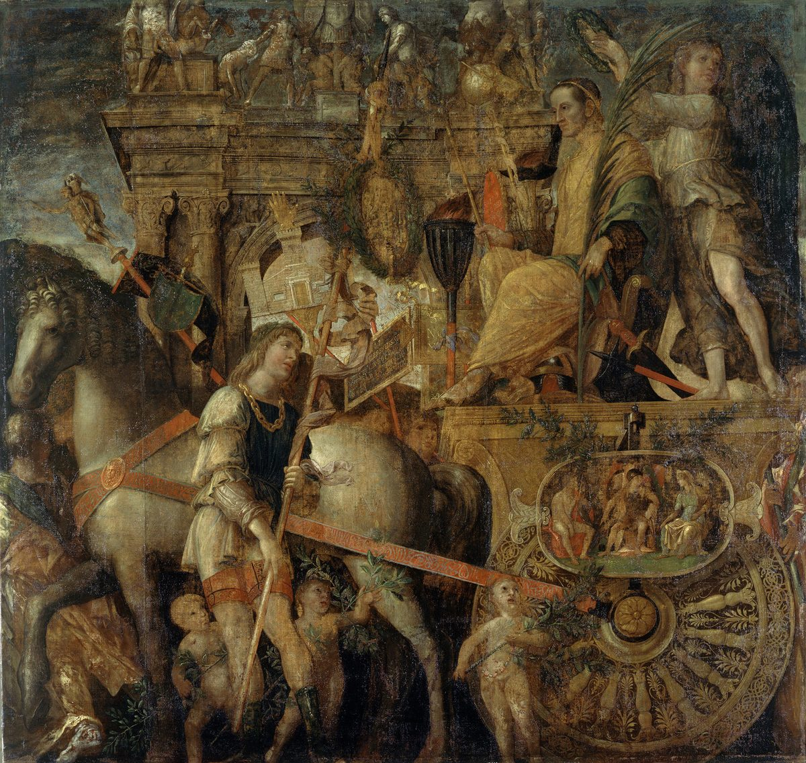

Colossians 2 — The Mister Translation

⚠ The last canvas of Mantegna’s nine-part procession: the victor himself, after the captives and the spoils have gone by. ‘Leading them in triumph’ (verse 15) borrows this Roman ceremony, with the powers in the place of the captives.
_-_The_Triumphs_of_Caesar,_9._Caesar_on_his_Chariot_-_RCIN_403966_-_Royal_Collection.jpg){kind=link}
Translator’s Notes
“How great a struggle I have for you, and for those in Laodicea.” Agōn, “struggle,” is the noun of Colossians 1:29, “struggling according to his working.” Laodicea was the neighboring town in the Lycus valley (encyclopedia), the congregation addressed at Revelation 3:14. “All who have not seen my face” includes the Colossians: Paul had not been there. The KJV reads “what great conflict I have for you”; the ASV reads “how greatly I strive for you”; the Douay reads “what manner of care I have for you.”
⚠ “The mystery of God, Christ.” The manuscripts differ more here than almost anywhere in the letter. The critical text sets “Christ” beside “the mystery of God”: the mystery is Christ, as at Colossians 1:27, “Christ in you, the hope of glory.” The Byzantine text reads “of God and of the Father and of Christ,” and so the KJV: “the mystery of God, and of the Father, and of Christ”; the ASV reads “the mystery of God, even Christ”; the Douay, from the Vulgate, reads “the mystery of God the Father and of Christ Jesus.” Plērophoria is the “full assurance” of 1 Thessalonians 1:5 (dictionary); epignōsis the “full knowledge” of Ephesians 4:13 (dictionary).
“All the treasures of wisdom and knowledge are hidden away.” Apokryphos, “hidden away,” is the word of Mark 4:22, “nor did anything become concealed except in order that it should come to light.” In the Greek of Isaiah 45:3 God promises “hidden treasures,” and Proverbs 2:4 tells the reader to search for wisdom “as for treasures”. Some readers hear a reply to teachers who offered secret knowledge to a few: here all of it is in Christ. The KJV reads “In whom are hid all the treasures of wisdom and knowledge”; the NWT 1984 reads “Carefully concealed in him.”
“Persuasive talk … your good order and the firmness of your faith.” Pithanologia, “persuasive talk,” stands in one verse of the New Testament, this one; paralogizomai, “delude,” is the “deceiving yourselves” of James 1:22. Stereōma, “firmness,” also stands in one verse; in the Greek Old Testament it is the “vault” of Genesis 1:6, the solid thing that holds. Taxis and stereōma are read by some as soldiers’ words, ranks and a solid front. The KJV reads “beholding your order, and the stedfastness of your faith in Christ”; the NIV reads “how disciplined you are and how firm your faith in Christ is.”
“As you received Christ Jesus the Lord, walk in him.” Paralambanō is the word for receiving a tradition, as at 1 Corinthians 15:3, “what I also received”; two verses later comes the other kind, “the tradition of men.” “Rooted” is the word of Ephesians 3:17, “rooted and grounded in love.” Westcott–Hort and the Byzantine text add “in it,” and so the KJV: “abounding therein with thanksgiving”; the NWT 1984 reads “overflowing with [faith] in thanksgiving.”
⚠ “Carries you off as plunder through philosophy … the elements of the world.” Sylagōgeō, to carry off as booty, stands in one verse of the New Testament; so does philosophia, this one. Readers since the early church have taken the verse two ways: as a warning against philosophy in general, as Tertullian is reported to have used it, or as a warning against one teaching at Colossae, which the verse itself calls “the tradition of men.” This page sets out both. Stoicheia, “elements,” stand in seven verses, among them Galatians 4:3 and Galatians 4:9 (dictionary); they are read as the ABCs of religion, as the physical elements, or as elemental spirits. The KJV reads “after the rudiments of the world”; the NIV reads “the elemental spiritual forces of this world”; the NWT 1984 reads “the elementary things of the world.”
⚠ “All the fullness of deity dwells bodily.” Theotēs, “deity,” being God, stands in one verse of the New Testament, this one; it is a different word from theiotēs, “divinity,” which stands in one verse, Romans 1:20. Plērōma is the “fullness” that was “pleased to dwell” in him at Colossians 1:19 (dictionary). “Bodily” is read as in a body, the incarnation; as in reality, against the “shadow” of v17; or as in the body that is the congregation. The KJV reads “all the fulness of the Godhead bodily”; the NIV reads “all the fullness of the Deity lives in bodily form”; the NWT 1984 reads “all the fullness of the divine quality,” a rendering nearer to theiotēs than to theotēs, and in line with the Witnesses’ teaching about the Son.
“You have been made full in him, who is the head of every rule and authority.” The fullness that dwells in him fills them. “Every rule and authority” are those of Ephesians 1:21, and the “rulers or authorities” created in him at Colossians 1:16. The KJV reads “And ye are complete in him”; the ASV reads “and in him ye are made full.”
“A circumcision not made with hands … the circumcision of Christ.” Acheiropoiētos, “not made with hands,” stands in three verses: Mark 14:58, “another not made with hands,” 2 Corinthians 5:1, “a house not made with hands,” and this one. The circumcision of the heart is old: “circumcise the foreskin of your heart” (Deuteronomy 10:16), and Romans 2:29. Apekdy-, “stripping off,” stands in three verses: here, v15, and 3:9. “The circumcision of Christ” is read as the circumcision Christ gives, or as his own death, the body stripped off. The Byzantine text reads “the body of the sins of the flesh,” and so the KJV: “in putting off the body of the sins of the flesh by the circumcision of Christ”; the ASV reads “a circumcision not made with hands.”
“Buried with him in baptism … raised with him through faith in the working of God.” It is the picture of Romans 6:4, “buried with him, then, through baptism into that death.” The text printed here reads baptismos, a word elsewhere used of washings; Westcott–Hort and the Byzantine text read the usual baptisma. “Faith in the working of God” is read so, or as the faith that God’s working produces; energeia is the “working” of 1:29. The KJV reads “through the faith of the operation of God”; the ASV reads “through faith in the working of God.”
“Dead in your trespasses … he made alive together with him, having freely forgiven us.” The words of Ephesians 2:1 and Ephesians 2:5, “made us alive together with Christ.” “The uncircumcision of your flesh” marks the readers as gentiles. “He” is God, unnamed in the Greek; the NWT 1984 supplies “[God] made YOU alive together with him.” “Freely forgiven” is charizomai, as at Ephesians 4:32 (dictionary), and “you” turns to “us.” The ASV reads “you, I say, did he make alive together with him, having forgiven us all our trespasses.”
⚠ “The handwritten bond … nailing it to the cross.” Cheirographon, a document written in one’s own hand, stands in one verse of the New Testament; it is reported to be the ordinary word for a signed note of debt. “With its decrees” is tois dogmasin, the phrase of Ephesians 2:15, “the law of commandments in decrees” (dictionary). Whose bond it was, a debt of sin or the law’s charge against those under it, is read both ways. “Blotted out” is the word of Acts 3:19, “that your sins may be blotted out.” The KJV reads “Blotting out the handwriting of ordinances that was against us”; the NIV reads “having canceled the charge of our legal indebtedness”; the NWT 1984 reads “by nailing it to the torture stake,” a doctrinal rendering (dictionary).
⚠ “Having stripped the rulers and the authorities … leading them in triumph.” The verb is middle and can be read two ways: God stripped the powers of their arms, or Christ stripped the powers off himself like a garment. Thriambeuō, to lead in a Roman triumph, captives paraded behind the victor, stands in two verses: 2 Corinthians 2:14, “who always leads us in triumph,” and this one. “In it” may be the cross of v14 or “in him”; the Greek pronoun allows both. The KJV reads “triumphing over them in it”; the Douay reads “triumphing over them in himself”; the NIV reads “triumphing over them by the cross.”
⚠ Judged “in eating and in drinking, or … a festival or a new moon or sabbaths.” These are the holy times of Israel’s calendar, the sabbath and the “beginnings of your months” of Numbers 28:9 and Numbers 28:11. Compare Galatians 4:10, “You are carefully observing days and months and seasons and years,” and Romans 14:5, “One person considers one day above another.” Readers differ on the sabbaths: some, among them traditions that keep the seventh day, read only the ceremonial sabbaths of the festivals; others read the weekly sabbath as well. This page sets out both. The KJV reads “or of the new moon, or of the sabbath days”; the NIV reads “a New Moon celebration or a Sabbath day”; the TLB adds “for not celebrating Jewish holidays and feasts.”
⚠ “A shadow of the things to come, but the body is Christ’s.” Shadow and body are a pair: the outline a thing casts, and the thing. The same contrast is drawn at Hebrews 8:5 and 10:1. Sōma, “body,” is read as the reality, which belongs to Christ, and also as the body of v19 and of Colossians 1:18, “the head of the body, the congregation”; this translation keeps “body” so that both readings stay open. The KJV reads “but the body is of Christ”; the NWT 1984 reads “but the reality belongs to the Christ”; the NIV reads “the reality, however, is found in Christ.”
⚠ “Disqualify you … humility and the worship of the angels … entering into the things he has seen.” Katabrabeuō, to rule a contestant out of the prize, stands in one verse of the New Testament; the prize is the brabeion of Philippians 3:14. Tapeinophrosynē is the “humility” of Philippians 2:3, here a practice, perhaps fasting (dictionary). “The worship of the angels” is read as worship given to angels or as the angels’ own worship, which visionaries claimed to join (dictionary). Embateuō, “enter into,” stands in one verse; it is reported to be used in inscriptions of initiates entering a sanctuary. The Byzantine text reads “has not seen,” and so the KJV: “intruding into those things which he hath not seen”; the ASV reads “dwelling in the things which he hath seen”; the NWT 1984 reads “Let no man deprive YOU of the prize.”
“Not holding fast the head … supplied and held together through its joints and ligaments.” The same picture as Ephesians 4:16, “the whole body, fitted together and held together by every joint that supplies it.” “Puffed up” in v18 is the verb of 1 Corinthians 8:1, “Knowledge puffs up.” The KJV reads “increaseth with the increase of God”; the NWT 1984 reads “goes on growing with the growth that God gives.”
“If you died with Christ from the elements of the world, why … do you submit to decrees?” The “elements” of v8 again. Dogmatizomai, “submit to decrees,” stands in one verse of the New Testament; it is the verb of the dogmata nailed to the cross in v14. The KJV reads “are ye subject to ordinances”; the Douay reads “why do you yet decree as though living in the world?”
“Do not handle, do not taste, do not touch … according to the commandments and teachings of men.” Most readers hear the teachers’ own slogans, quoted back. The things forbidden “all perish in the using”: food is eaten and gone, as at Mark 7:19, “it does not go into his heart but into his stomach.” “Commandments and teachings of men” is the language of Isaiah 29:13 in Greek, which Jesus quotes at Mark 7:7, “teaching as doctrines the commandments of men.” The KJV reads “Touch not; taste not; handle not”; the ASV reads “Handle not, nor taste, nor touch.”
⚠ “Self-made worship … of no value against the indulgence of the flesh.” Ethelothrēskia, worship of one’s own devising, and apheidia, “harsh treatment,” not sparing the body, each stand in one verse of the New Testament, this one. The last clause is among the hardest in the letter. Most read it as here: such rules have no power against indulgence. Others read it as saying that the rules themselves serve the flesh. This page sets out both. The KJV reads “not in any honour to the satisfying of the flesh”; the ASV reads “but are not of any value against the indulgence of the flesh”; the NIV reads “but they lack any value in restraining sensual indulgence.”
Patterns worth carrying forward
Where this translation keeps the exact words: “struggle,” as at 1:29; “full assurance,” as at 1 Thessalonians 1:5; “full knowledge,” as at Ephesians 4:13; “hidden away” for apokryphos; “elements of the world,” as at Galatians 4:3; “deity” for theotēs, kept apart from “divinity” at Romans 1:20; “fullness,” as at 1:19; “every rule and authority,” as at Ephesians 1:21; “not made with hands,” as at 2 Corinthians 5:1; “freely forgiven,” as at Ephesians 4:32; “blotted out,” as at Acts 3:19; “decrees,” as at Ephesians 2:15; “leading in triumph,” as at 2 Corinthians 2:14; “body” beside “shadow”; “humility,” as at Philippians 2:3; and “commandments of men,” as at Mark 7:7.
Echoes paid. The struggle of Colossians 1:29; the mystery, “Christ in you,” of Colossians 1:27; the fullness of Colossians 1:19; the rulers and authorities of Colossians 1:16, now stripped and led in triumph; the head of the body of Colossians 1:18; the elements of Galatians 4:3; the circumcision of the heart from Deuteronomy 10:16; buried in baptism from Romans 6:4; made alive together from Ephesians 2:5; the decrees of Ephesians 2:15; and the prize of Philippians 3:14.
Echoes planted. “Stripping off” returns at 3:9, “having stripped off the old man with its practices”; “raised with Christ” opens 3:1, “seek the things above”; the household of 3:18–4:1; and Laodicea again at 4:13–16, with a letter to be read there.
Next in this book: Colossians 3, already on these pages. “If you were raised with Christ, seek the things above.”